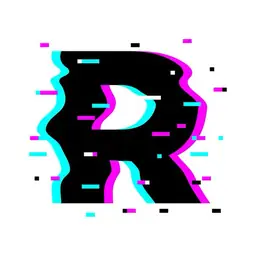

Custom dimensions
Hosts define boards with exact pixel widths and heights, including unusually tall or ribbon-shaped canvases.
Leave a pixel wherever you roam. A shared canvas for art, messages and signboards—starting on the web, with physical screens as the next layer.

A pixel board should be easy to open, personalize and share—whether it lives on a phone, a browser display, a hostel wall or a shop window.
Make public screens participatory, without making anyone install an app to look.
OMLAYER designed ROAMDOTS as a web-first community canvas. Anyone can explore boards, while hosts can shape the dimensions and presentation of their own spaces.
The first implementation brings together a browser canvas, account and board management, publish workflows, a Telegram bot and an experimental path toward physical LED signage.
The public beta focuses on usable board creation and sharing. Hardware and monetization are intentionally staged behind separate verification gates.
Hosts define boards with exact pixel widths and heights, including unusually tall or ribbon-shaped canvases.
Touch drawing, photo-to-pixel previews and Pixel War modes built for phone-sized screens and real logical pixels.
Host sign-in, editable profiles and authorization boundaries keep board administration with its actual owner.
Bot commands, pairing, announcements and moderation tools connect boards with their host communities.
Web display and artwork playback are joined by an experimental Windows-to-Bluetooth LED connector awaiting physical acceptance.
TON, USDT and Telegram Stars flows are under development; public payment activation and payout claims remain disabled pending review.
The interface stays lightweight while the service handles identity, board state, history and safe publication.
Cloudflare Workers serve the web app and APIs; D1 stores hosts, boards and published art; Telegram extends the same network into chat. A separate connector experiment explores sending the published content to real RGB displays without changing their original firmware.
ROAMDOTS is an active public beta, not a claim that every proposed capability has shipped.
Useful software first. Payments and physical hardware only after their own release checks.
Core web-board functionality, host controls and Telegram integration have been implemented in stages. Mobile interaction, login and exact board rendering are under ongoing acceptance testing.
Financial features remain disabled, and the experimental Bluetooth connector still needs real-device verification. The portfolio reflects the engineering already performed without presenting those paths as production-ready.
From interactive interfaces to APIs, bots and connected displays, OMLAYER develops the parts as one maintainable system.